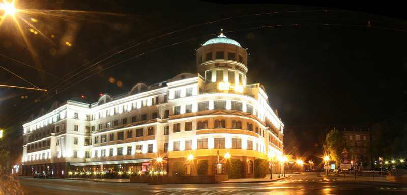
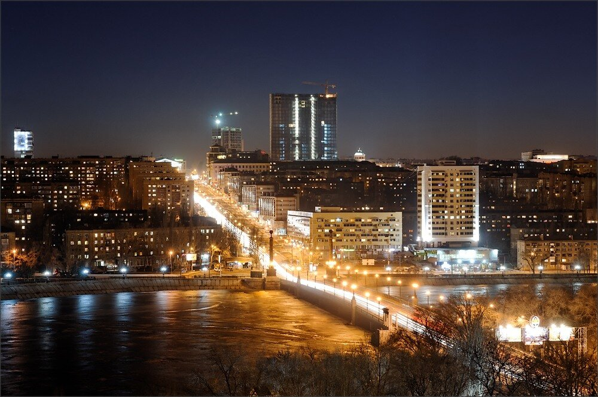
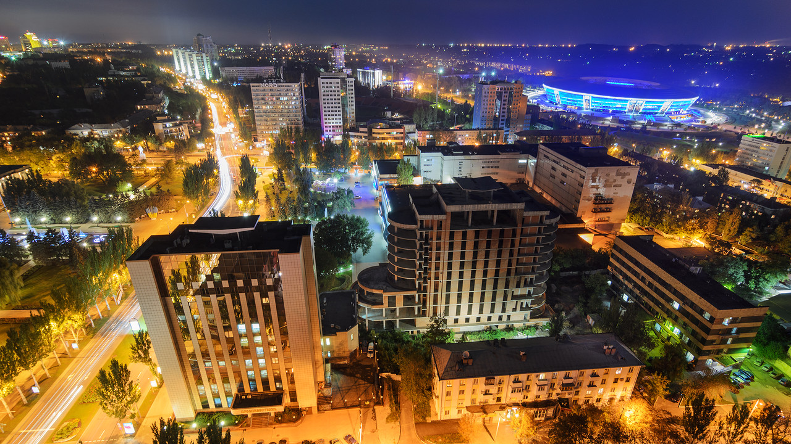

Донецк
Доне́цк (укр. Донецьк; до 1924 — Юзовка, до 1929 — Сталин, до 1961 — Сталино) — город на востоке Украины, на реке Кальмиус. Согласно законодательству Украины — административный центр Донецкой области и номинально образованных Донецкого района и Донецкой городской общины. С апреля 2014 года контролируется самопровозглашенной Донецкой Народной Республикой и рассматривается ею как столица. Пятый город Украины по количеству населения, численность которого на 1 января 2014 года составляла 950 372 человек[10]. На территории, подчинённой Донецкому горсовету, на 1 января 2014 года проживало 965 828 человек[10]. Украинские власти в ходе вооружённого конфликта на востоке страны перенесли учреждения Донецкой областной государственной администрации сначала в Мариуполь[11][12][13], а в октябре 2014 года — в Краматорск[14], который на данный момент является административным центром Донецкой области.
  Вооруженный конфликт
Вооружённый конфли́кт в Донба́ссе[14][15] — боевые действия на территории Донецкой и Луганской областей Украины, начавшиеся в апреле 2014 года и предшествующие полномасштабному вторжению России на Украину в феврале 2022 года. Являются частью российско-украинской войны.
Боевые действия ведутся между украинскими вооружёнными силами, другими силовыми структурами и нерегулярными добровольческими формированиямиПерейти к разделу «#Войсковая группировка Украины» с одной стороны и пророссийскими вооружёнными формированиями самопровозглашённых Донецкой Народной Республики (ДНР) и Луганской Народной Республики (ЛНР)Перейти к разделу «#Вооружённые формирования сепаратистов» при поддержке России — с другой.
В марте-апреле 2014 года в ходе пророссийских протестов были захвачены административные здания в Харькове, Донецке, Мариуполе, Луганске и других городах. В ночь с 11 на 12 апреля под руководством полковника ФСБ Российской федерации в запасе Гиркина Игоря Ивановича (Стрелкова) группа из 52 бойцов пересекла государственную границу Украины в районе Донецкой области и назвавшись сторонниками Донецкой Народной Республики, захватила административные здания (милиция, горсовет) в городе Славянск Донецкой области, объявив о переходе города под власть ДНР[16]. 13 апреля группа Стрелкова устроила засаду и атаковала офицеров СБУ, прибывших в город для пресечения деятельности диверсионно-разведывательной группы, был убит один и ранены три работника СБУ. По словам самого Стрелкова, тем самым он нажал на спусковой крючок войны на Донбасе[17][18]. В ответ 14 апреля и. о. президента Украины Александр Турчинов объявил начало «антитеррористической операции» для сохранения территориальной целостности Украины. До конца апреля 2014 года противостояние пророссийских сил и украинских военных ограничивалось периодическими стычками, рейдами и нападениями на блокпосты с использованием стрелкового оружия.
11 мая в Донецкой и Луганской областях были проведены референдумы о самоопределении, по итогам которых было объявлено о «государственной самостоятельности» ДНР и ЛНР, что не получило признания международного сообщества. После этого конфликт активизировался, украинские вооружённые силы постепенно были усилены бронетехникой, вертолётами, начались артиллерийские обстрелы. Пророссийские вооружённые формирования отвечали огнём из переносных зенитно-ракетных комплексов, сбивая самолёты и вертолёты[19].
25 мая президентом Украины был избран Пётр Порошенко. В июне украинские силы развернули наступление по всему фронту и к началу августа, вчетверо сократив территорию, контролировавшуюся пророссийскими силами с начала боевых действий, практически взяли Донецк и Луганск в кольцо окружения.
В середине августа было сменено руководство ДНР и ЛНР, а новые лидеры объявили о получении существенного подкрепления. По заявлениям украинской стороны, подкрепления состояло из российских вооружённых сил. В ходе начавшегося контрнаступления в окружении под Иловайском оказались несколько тысяч украинских военных[19]. В начале сентября было подписано (первое) Минское соглашение, после чего интенсивность боевых действий снизилась, однако на отдельных направлениях столкновения и обстрелы продолжались.
В середине января 2015 года возобновились активные боевые действия на всём протяжении фронта, в результате которых к началу февраля пророссийским силам удалось добиться значительных успехов, включая победу в боях в районе Дебальцева. 12 февраля по результатам переговоров лидеров «нормандской четвёрки» было подписано Второе минское соглашение[20]. После этого активные манёвры прекратились, конфликт перешёл в замороженную стадию с периодическим возобновляемыми обстрелами и следующими прекращениями огня.
По данным доклада Управления Верховного комиссара ООН по правам человека от 15 декабря 2014 года, ситуация в зоне конфликта характеризовалась полным отсутствием законности и порядка, сохранением насилия и продолжающимися боевыми действиями, чему способствовал приток через границу тяжёлого и современного вооружения и живой силы, в том числе из России[21].
Так, согласно докладу, вакуум власти и законности в зоне конфликта привёл к убийствам, пыткам, сексуальному насилию, рабскому труду и требованиям выкупа со стороны вооружённых формирований. Широкое распространение получили практики преследования и запугивания людей с проукраинскими симпатиями, публичные унижения и фиктивные казни. Также в докладе отмечалось, что усилия правительства по защите территориальной целостности Украины и восстановлению правопорядка в зоне конфликта сопровождались произвольными задержаниями, пытками и похищениями людей, подозреваемых в «сепаратизме и терроризме». Всё это оказывало непосредственное влияние на основные права человека, в том числе безопасность, свободу и благосостояние местного населения[21].
По данным Управления Верховного комиссара ООН по правам человека, на 31 декабря 2021 года жертвами конфликта на Украине стали от 14 200 до 14 400 человек (из них 3 404 гражданских лиц, около 4 400 украинских военных и примерно 6 500 повстанцев)[13]. Большинство смертей среди гражданского населения произошло в 2014 и 2015 годах. В 2016—2021 годах погибло 365 гражданских лиц, а в 2021 году погибло 25 гражданских лиц[13].
По подсчётам Управления по координации гуманитарных вопросов ООН (ноябрь 2019), было ранено до 9 тыс. человек, внутренними переселенцами стали 1,3 млн человек, нуждаются в помощи 3,5 млн человек, появилась «линия соприкосновения» длиной 427 км, «перекрывшая доступ к основным услугам»[22]